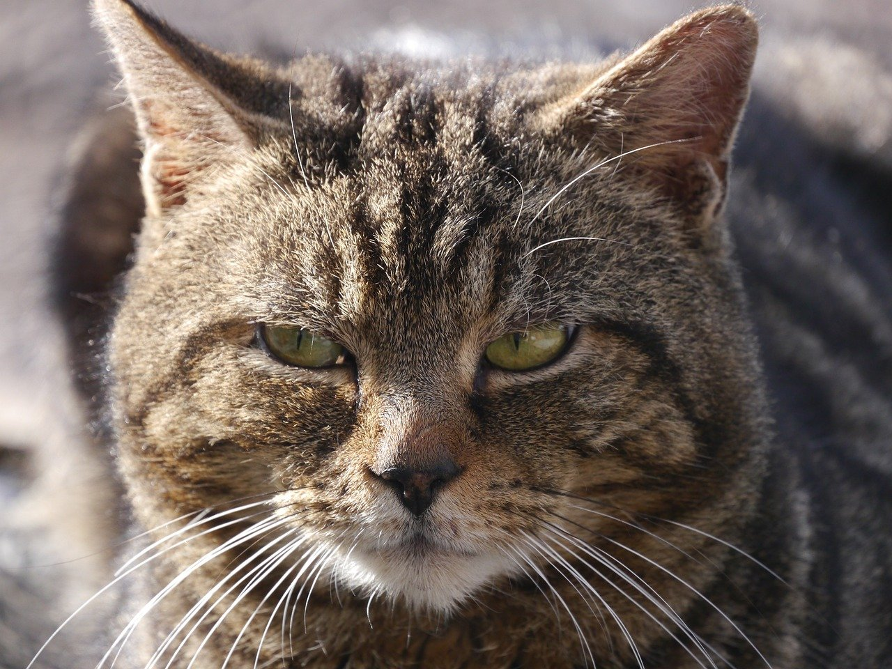

Eynaja's Trading Card Project
Trading Card practice
Cat

Cats have nearly twice the amount of neurons in their cerebral cortex as dogs
Scientific Name: Felis catus
Average Length: 18-28 inches
Average Lifespan: 20 yrs
Habitat: Indoor and outdoor enviornments
Cats are both domestic and wild animals. Depending on their exposiure to humans in kitten-hood, they can be feral, or become tame and can live in your home!